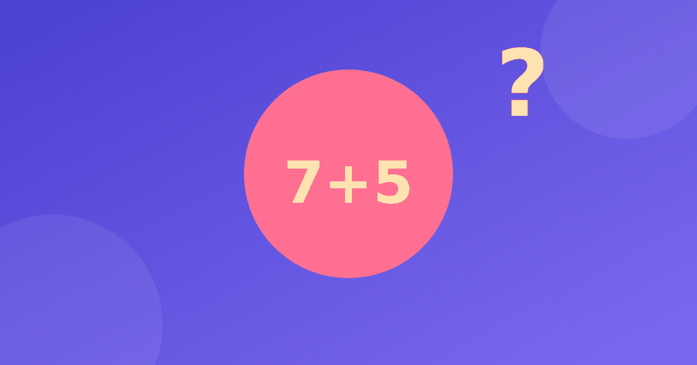

Что даёт ребёнку счёт без записи и калькулятора

Каждый родитель рано или поздно слышит от ребёнка: зачем считать в уме, если есть калькулятор и телефон? Честный ответ не сводится к громким словам. Счёт в уме не делает ребёнка гением, но помогает лучше чувствовать числа, удерживать в голове несколько шагов и спокойнее относиться к примерам. Разберём, что именно тренируется, чего ждать не стоит и как заниматься дома без напряжения.
Что происходит в голове при счёте без записи
Когда ребёнок считает 8 + 5 без тетради, ему приходится сделать сразу несколько вещей. Нужно вспомнить, сколько не хватает до десяти, разделить пять на две части, прибавить недостающее и добавить остаток. Получается цепочка из трёх коротких шагов. Сначала 8 + 2 = 10, затем 5 − 2 = 3, затем 10 + 3 = 13. Пока ребёнок держит в голове промежуточный результат, работает его рабочая память, то есть небольшое «окошко», где мы временно храним числа.
Поэтому устный счёт и память связаны напрямую: чем увереннее ребёнок обращается с числами, тем меньше сил уходит на сами вычисления и тем больше остаётся на понимание задачи. Но это связь практики, а не чудо. Громких обещаний здесь не будет, только наблюдение: привычное действие требует меньше усилий, чем незнакомое.
Другой пример: вычитание 15 − 8. Ребёнок может сначала отнять пять и получить десять, а затем отнять оставшиеся три и прийти к семи. Здесь тоже нужно помнить, сколько уже вычли и сколько осталось. Каждый такой пример становится небольшой тренировкой.
Внимание, которое растёт понемногу
Для детей внимание развивается не на специальных упражнениях, а в обычных делах, где нельзя потерять нить. Пример 47 + 26 не решить, если отвлечься посередине. Сначала 47 + 20 = 67, потом 67 + 6 = 73. Потерял 67 и пришлось начинать заново. Так развитие внимания у детей идёт само собой: счёт в уме мягко приучает доводить мысль до конца.
Помогают несколько простых правил.
- Занимайтесь в тишине, без телевизора и планшета рядом.
- Давайте три или четыре примера подряд, а не двадцать.
- Просите проговаривать шаги вслух, так проще не потерять промежуточный ответ.
- Хвалите за ход рассуждения, а не только за верный результат.
Внимание ребёнка не безгранично. Если занятие длится дольше пятнадцати минут, ошибок становится больше, и дело не в лени, а в усталости. Лучше сделать перерыв, пройтись по комнате или выпить воды и вернуться к примерам позже. Так занятие остаётся приятным, а числа не связываются с усталостью.
Уверенность важнее скорости
Многие родители хотят, чтобы ребёнок считал быстро. Но темп приходит сам, когда способ понятен. Если торопить, ребёнок начинает угадывать и боится ошибиться. Об этом подробнее в статье скорость устного счёта. Гораздо ценнее, когда ребёнок говорит: «Я знаю, как это сделать». Такое чувство появляется после нескольких удачных попыток, поэтому начинайте с лёгких примеров и усложняйте их постепенно.
Заметить уверенность можно по мелочам: ребёнок перестаёт пересчитывать на пальцах, сам предлагает решить пример или объясняет брату способ. Это значит, что навык становится его собственным. Отмечайте такие моменты вслух, но без чрезмерных похвал.
Чего не стоит ждать
Скажем честно, чего счёт в уме не даёт. Он не гарантирует отличных оценок по всей математике, не заменяет понимание задач и не развивает сразу всё. Это один из навыков, и полезен он вместе с другими: чтением условий, решением задач, играми. Если ребёнок устал или расстроен, лучше остановиться, чем доводить занятие до слёз. Короткое спокойное занятие сегодня даёт больше, чем длинное и нервное.
Хорошей опорой служит и таблица умножения, которая тоже закрепляется повторением, а не зубрёжкой. Подробнее об этом в статье как выучить таблицу умножения.
Как начать дома
Начните с малого: пяти минут в день вполне достаточно. Сначала повторите, из каких частей состоит число, затем переходите к сложению. Если нужна опора для самого трудного шага, загляните в статью как объяснить сложение через десяток.
Можно превратить счёт в маленький ритуал: по дороге в школу, пока ждёте лифт или едете в машине. Назовите число и попросите добавить к нему семь, затем вычесть три. Ничего не нужно писать и доставать. Если ребёнок ошибся, просто повторите шаги вместе, без упрёков.
Для ежедневных занятий подойдёт тренажёр «Устный счёт». В нём четыре модуля: состав числа, сложение без перехода, сложение через десяток и вычитание. Есть числовая лента с наглядными шагами, а кнопка «Объясни по-другому» даёт три варианта объяснения. Бесплатно открыт модуль «Состав числа». Личный рекорд считается без таймера на вопросах, поэтому спешить не нужно.
Главное, чтобы ребёнок возвращался к занятиям без неприязни. Если он спокойно решает несколько примеров и в конце слышит доброе слово, цель достигнута.